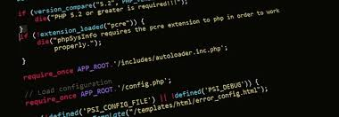

Krzysztof Żurowicz - strona domowa
Powód powstania tej strony?
Strona jest zbiorem wiedzy wyniesionej z kursu WTF oraz przemyśleń i pomysłów związanych z technologią frontend-u.
Przejdź do listy tematów
Poruszane tematy:
HTML - informacje na temat warstwy semantycznej strony internetowej
Tworzenie zgodnego ze standardami HTML-a to sztuka, której opanowanie wymaga intensywnej pracy i dużej ilości poświęconego czasu. Tu znajdziesz wiele informacji i porad odnośnie technologii HTML.
Przejdź do artykułu o HTML-u
CSS - informacje na temat warstwy prezentacji strony internetowej
Wygląd strony opisujemy w CSS. Tutaj zestaw informacji pozwalający zadbać o warstwę prezentacji strony internetowej.
Przejdź do artykułu o CSS-ach
JavaScript - informacje na temat warstwy interakcji na stronie internetowej
JavaScript - niegdyś obiekt żartów w środowiskach developerskich. Ale ostatecznie trzeba po niego sięgnąć by dodać interakcję na stronie. Tutaj znajdzieć podstawową wiedzę z JavaScript.
Przejdź do artykułu o JavaScript
Narzędzia i metodyki
Zbiór ciekawych informacji na temat narzędzi web developera oraz informacje na temat metodyk pracy.
Przejdź do artykułu o narzędziach i metodykach
Pomysły i przemyślenia
Tutaj znajdziesz moje własne pomysły do zrealizowania i przemyślenia pojawiające się w trakcie nauki frontend-u.
Przejdź do artykułu z pomysłami i przemyśleniami